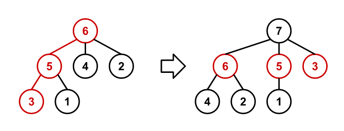

A sequence of rooted trees $T_n$ is constructed such that $T_n$ has $n$ nodes numbered $1$ to $n$.
The sequence starts at $T_1$, a tree with a single node as a root with the number $1$.
For $n > 1$, $T_n$ is constructed from $T_{n-1}$ using the following procedure:
For example, the following figure shows $T_6$ and $T_7$. The path traced through $T_6$ during the construction of $T_7$ is coloured red.

Let $f(n, k)$ be the sum of the node numbers along the path connecting the root of $T_n$ to the node $k$, including the root and the node $k$. For example, $f(6, 1) = 6 + 5 + 1 = 12$ and $f(10, 3) = 29$.
Find $f(10^{17}, 9^{17})$.
solve() → ?